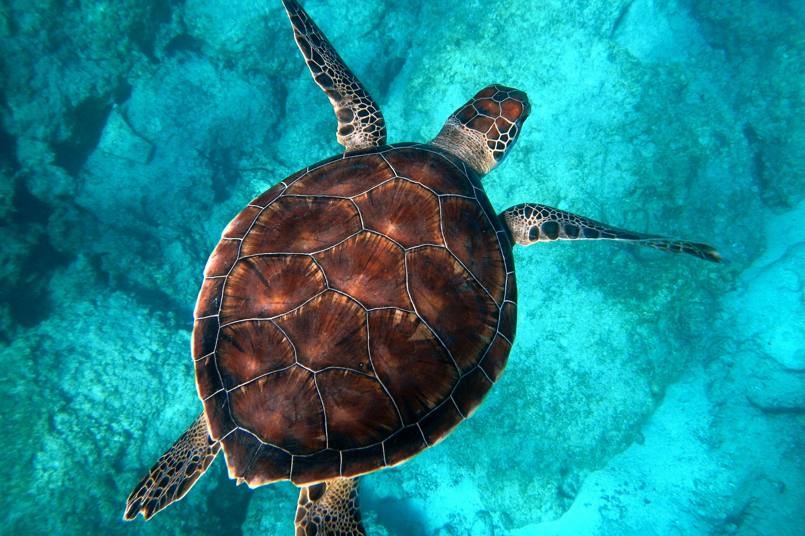
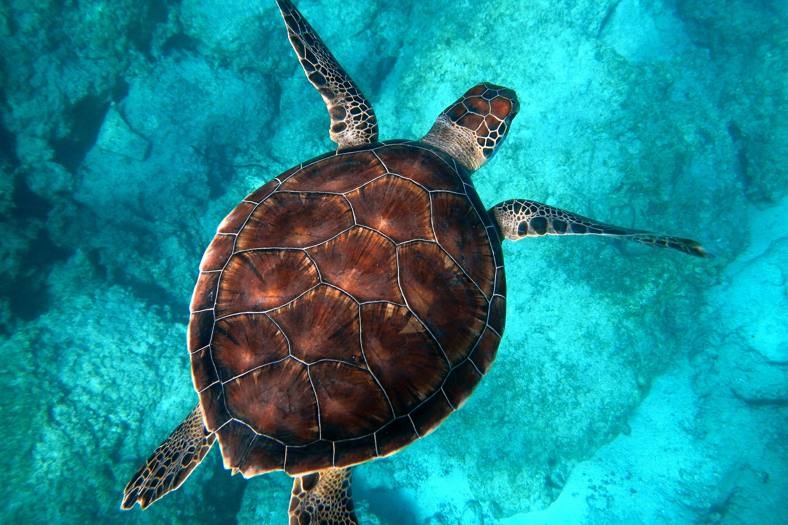

Sightseeing
Taniti offers breathtaking sights that blend natural beauty with rich cultural heritage. While many visitors spend most of their time in Taniti City, known for its native architecture and stunning beaches, there are plenty of ways to explore beyond the city’s borders.
Explore Taniti City
Wander through streets lined with traditional native architecture, reflecting the island’s rich history.
Relax on white, sandy beaches that surround Yellow Leaf Bay, offering some of the best ocean views on the island.
Island Tours & Adventures
Take a boat tour around Taniti’s coastline, discovering hidden coves and marine life.
Join a bus tour for a guided experience of the island’s most famous landmarks and scenic spots.
. Unsplash.")
Rainforest Hikes & Volcano Exploration
Immerse yourself in nature with a guided rainforest hike, where you can spot exotic wildlife and lush tropical plants.
Visit Taniti’s active volcano, an awe-inspiring natural wonder that attracts visitors eager to see its rugged landscapes up close.
. Unsplash") 

Whether you’re strolling through historic streets, soaking up the sun on pristine beaches, or embarking on an adventurous island tour, Taniti offers unforgettable sightseeing opportunities for every traveler.